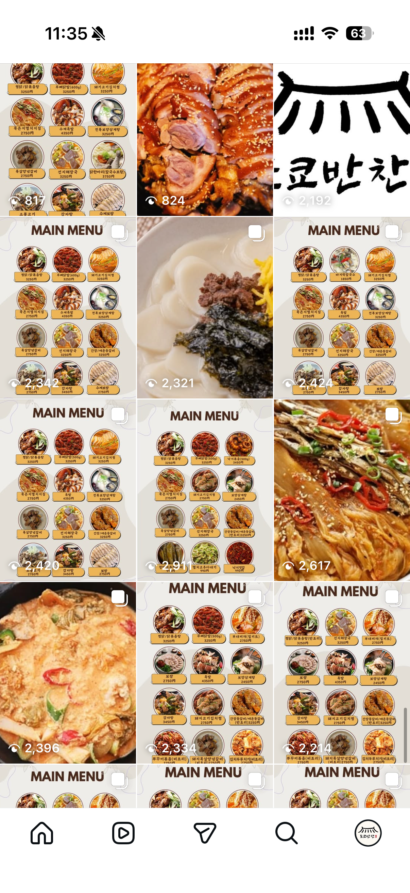

매일 먹기 좋은 반찬과 메인요리를 간결한 메뉴 카드로 빠르게 고르고 주문하세요.

피드 스타일에 맞춰 짧고 명확한 설명으로 정리했습니다.
불향과 감칠맛이 강한 인기 메인. 레드 포인트 썸네일로 매콤함을 직관적으로 전달.
달큰하고 부드러운 밥도둑 메뉴. 브라운 톤 배경으로 따뜻한 집밥 무드 강조.
짭짤·고소한 기본 사이드. 클로즈업 컷으로 윤기와 식감 포인트를 살림.
아삭하고 산뜻한 조합. 그린 컬러 강조로 신선함과 가벼운 느낌 전달.
잔치 느낌의 스페셜 반찬. 면 텍스처가 잘 보이게 상단 조명 컷 배치.
메인과 함께 주문되는 국물류. 뚝배기/볼 중심 구도로 따뜻함과 푸짐함 표현.
도쿄 지역 한국 반찬 주문·픽업·문의 환영합니다.
Instagram @tokyo_banchan | Phone +81-00-0000-0000